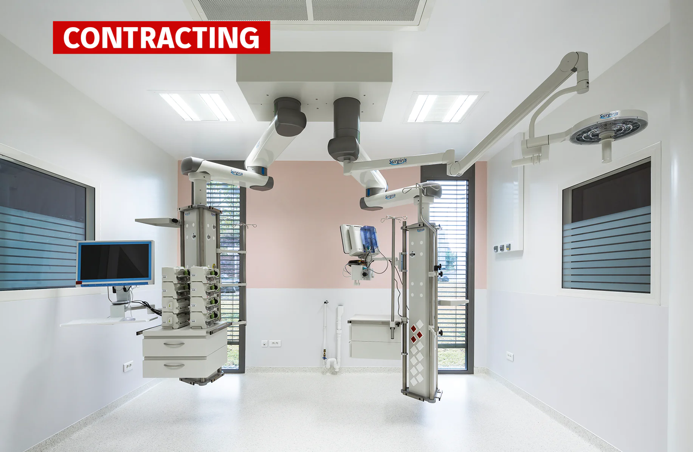
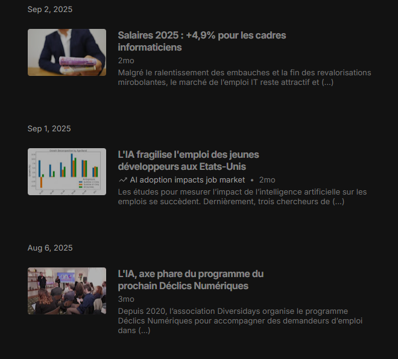
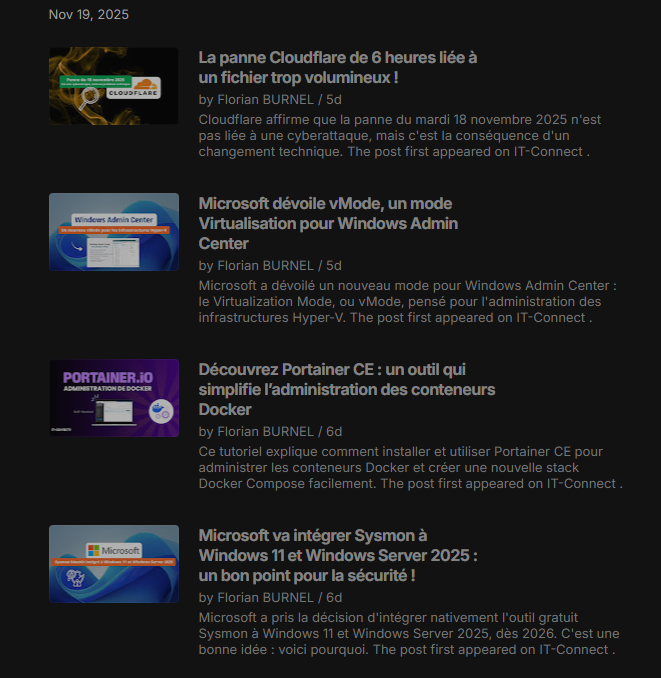

Baccalauréat
Littéraire / Option : Langues Etrangère Lycée Marie Laurencin - Mennecy 91540 (2011-2014)
En 2014 après l'obtention de mon BAC Littéraire, il m'est très rapidement apparu qu'il était impossible pour moi de continuer les études, l'envie de quitter les bancs de l'école pour gagner mon premier vrai salaire était trop forte. J'ai donc décidé de me lancer dans la première opportunité qui s'offrait à moi, le monde du BTP. Après quelques années j'ai décidé de me reconvertir, le monde de l'informatique m'a toujours attiré et c'est ainsi que je me suis lancé dans une formation certifiante afin de devenir Technicien Assitant informatique. Formation que j'ai obtenue et qui ma encore plus donné le goût à l'informatique avec l'envie d'en savoir encore plus. Je me suis donc dirigé vers le BTS SIO en option SISR en alternance qui avait pourtant bien commencé, une entreprise trouvé rapidement mais malheuresement certains problème de trésorerie ont contraint mon employeur à se séparer de moi dès le 2ème mois. Mais je n'ai pas perdu de vue mon objectif qui est d'obtenir mon BTS, j'ai donc continué à chercher tout en travaillant. Et à force de determination j'ai fini par réussir à trouver une entreprise, CEGELEC TERTIAIRE IDF et ainsi l'aventure du BTS SIO redevenait une réalité.
Littéraire / Option : Langues Etrangère Lycée Marie Laurencin - Mennecy 91540 (2011-2014)
AFCI - Evry Courcouronnes 91000 (2023)
Facultés des Métiers de l'Essonne, Massy 91377 (2024-2026)
Le BTS SIO (Service Informatique aux Organisations) est une formation sur deux ans destinées aux personnes dont l'objectif est d'intégrer le domaine de l'informatique Ce diplôme permet d'obtenir les compétences pour devenir un professionnel de l'informatique capable de répondre aux besoins des entreprises tel que : assistance technique, administration de systèmes, developpement d'applications. Ce BTS ce décline en deux options : SISR ou SLAM et peut s'effectuer en alternance ou bien en initial.
Cette option met l'accent sur le côté gestion de réseaux et systèmes mais également une part d'assistance technique. Elle permet d'obtenir les compétences suivantes
L'option SLAM est axée sur le developpement d'applications, logiciels. Les étudiants y apprennent à concevoir, programmer et maintenir des applications web, mobiles ou de bureau.
L’histoire de Cegelec est intimement liée, depuis maintenant cent ans, au développement des secteurs de l’énergie en France et en Europe. Son origine remonte à 1913, année de naissance de la CGEE (Compagnie Générale d’Entreprises Électriques) qui, au fil des ans, augmente son savoir-faire pour devenir un des leaders sur les marchés liés à l’énergie.

Durant le mois d'Août mon entreprise a déménagé et durant cette opération, en plus des tâches qui m'avait été confié tel que : assurer la continuité du support, la mise en place de postes de travail, installation des Click Share pour les salles de réunion, désinstallation serveur, pare feu, routeur, j'ai pu brasser et mettre en route des bornes wifi.
Dans le cadre de ma formation, j'ai réalisé l'installation et la sécurisation d'un pare-feu OPNsense sur une architecture physique. Ce projet a impliqué la préparation du support d'installation, la segmentation réseau via la configuration d'interfaces WAN, LAN et WiFi, ainsi que la mise en place de politiques de filtrage par règles de firewall. J'ai également intégré une brique de supervision en configurant le service Net-SNMP, permettant un monitoring précis de l'équipement via Zabbix. Cette expérience m'a permis de maîtriser les fondamentaux de la sécurité périmétrique et de l'administration système sous FreeBSD.
Lors de mon alternance, j’ai eu la responsabilité d’assurer le support informatique de mon entreprise (environ 420 collaborateurs). Cette mission m’a énormément apporté, tant sur le plan technique que sur le plan humain : gestion des utilisateurs en situation critique (par exemple : ordinateur hors service à 17h30 alors qu’un devis doit être produit et envoyé avant 20h). Mes missions consistaient également à préparer l’ensemble du matériel informatique pour l’arrivée de nouveaux collaborateurs (PC, postes de travail, smartphones).
Dans le cadre d'un PPE, j'ai conçu et mis en place l'infrastructure complète
nécessaire à
la mise en place d'un site Mediawiki.
Il fallut donc :
La veille informatique est une activitée primordial dans le domaine informatique que l'on soit du
côté programmation ou du côté systèmes, réseaux.
En effet, dans un monde ultra-connecté l'informatique est en constante évolution. A l'image des
mises à jours qui apportent les derniers correctifs de performance, de sécurité la veille
informatique en est sont extension pour les utilisateurs

